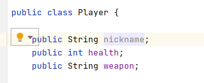
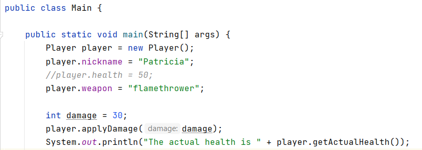

Encapsulación
El mecanismo que permite restringir el acceso a componentes en los objetos, es decir, ofrece protección a los miembros de la clase de cualquier acceso externo no autorizado es la encapsulación. No estamos hablando de seguridad, hablamos más bien, de restringir el acceso desde fuera al funcionamiento interno de una clase, es decir, ocultar el trabajo interno que se realiza en una clase.
Veamos un ejemplo de una clase que no usa encapsulación y así nos permitirá entender mejor porqué la encapsulación en algo positivo. Luego veremos cómo se haría con encapsulación.
Ejemplo de programa SIN encapsulación
Acceso a la clase y modificacion de funcionalidad
Primero creamos una clase Player con los siguiente campos:
public class Player {
public String name;
public int health;
public String weapon;
public void applyDamage(int damage) {
this.health -= damage;
if (this.health <= 0 ) {
System.out.println("Player died");
}
}
public int getActualHealth() {
return health;
}
}
Ahora implementamos el main en otra clase:
public class Main {
public static void main(String[] args) {
Player player = new Player();
player.name = "Patricia";
player.health = 50;
player.weapon = "flamethrower";
int damage = 30;
player.applyDamage(damage);
System.out.println("The actual health is " + player.getActualHealth());
damage = 10;
player.health = 100;
player.applyDamage(damage);
System.out.println("The actual health is " + player.getActualHealth());
}
}
Observamos que podemos inicializar directamente los campos del objeto Player a través de clase externa porque hemos establecido la visibilidad como public.
Además, vemos que podemos causar daño al jugador, pero seguidamente podemos darle más vida puesto que tenemos control sobre los atributos del jugador. Por lo que, al poder acceder a esos campos directamente potencialmente estamos abriendo la aplicación y permitiendo cambiar el comportamiento.
Ya que nosotros no queremos que se le pueda dar vida. Solo aplicar daño.
Consecuencias de cambios internos de la clase
Imaginar que la aplicación evoluciona y queremos modificar un atributo de la clase Player, por ejemplo, ya no queremos el nombre, ahora vamos a tener en cuenta el nickname del jugador.

Al hacer este cambio, el método main que accedía a este campo, genera un error.
Lo que significa que cualquier campo que hagamos en la clase de Player afectará a cualquier clase que lo haya usado.
Sabiendo que, es un cambio interno de la clase y en teoría no debería afectar a ninguna otra clase, porque hemos decidido que es se entiende mejor si el atributo se llama nickname que si se llama name.
Garantizar la clase se crea con los valores correctos
Como no hemos definido un constructor, puede ser que la clase externa que usa Player no defina las variables de forma válida. Por tanto, no podemos garantizar que el uso del objeto jugador sera correcto.
Imagina que al crear un objeto de la clase Player nos olvidamos de darle valor al campo de health:

Al intentar aplicar daño no se aplicará de forma correcta. Por tanto, es conveniente definir un constructor para garantizar que el objeto se construye de forma correcta y además si queremos agregar algún tipo de validación también podríamos realizarla en el constructor.
Ejemplo de programa CON encapsulación
Vamos a ver cuál es la forma correcta realizar el ejemplo anterior usando encapsulación.
public class PlayerOk {
private String name;
private int health = 100;
private String weapon;
public PlayerOk(String name, int health, String weapon) {
this.name = name;
if (health > 0 && health <= 100) {
this.health = health;
}
this.weapon = weapon;
}
public void applyDamage(int damage) {
this.health -= damage;
if (this.health <= 0 ) {
System.out.println("Player died");
}
}
public int getActualHealth() {
return health;
}
}
public class Main {
public static void main(String[] args) {
PlayerOk playerOk = new PlayerOk("Patri", 50, "flamethrower");
PlayerOk playerOk2 = new PlayerOk("Manu", 150, "sword");
}
}